12.31.2006 10:04
Chicago wifi
The banners in the Chicago airport say that there is wireless access
here. Checking it out, I see only the usual "pay a rediculous amount"
for a day of service. But then I noticed that there is a flight status
view on their payment page. I appreciate that small token of help. I
would rather have the free wireless as they have in the Las Vegas
airport, but I won't knock having flight status without having to
always walk over to the monitors. The plane location is probably just
a linear interpolation, but it is still cool.
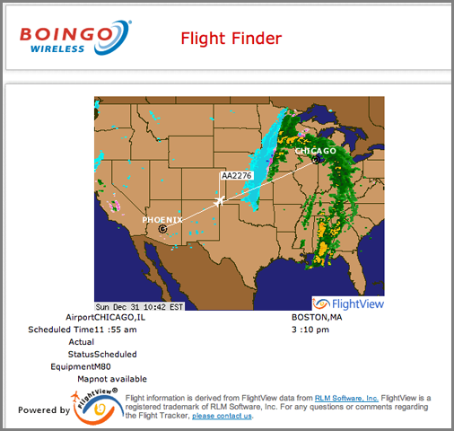
12.29.2006 17:17
GoogleEarth S57 ENC data
As I have written about before, I have used gdal to convert an S57
dataset to Google Earth. I didn't release more than the screen shots
before, but since http://destinsharks.com/ has been
talking up this kind of stuff, here is the raw gdal conversion. It
won't take much to make better scripts to produce more chart like
output. That will come soon.
US5VA17M-part-on.kmz
More details from my Dec 5th post
I am looking at which lines to pull, line colors, and icons. The default thumbtacks are interesting, but not the best solution. To lay the buoys on the ground or make them placemarks that stick up? What's your take? As always, "gdal/ogr rocks!" I am hoping to release the whole set of US charts soon and have the whole process automated real soon now (which it basically already is).
And... more NOAA data to GoogleEarth converters are coming, I promise.
US5VA17M-part-on.kmz
More details from my Dec 5th post
I am looking at which lines to pull, line colors, and icons. The default thumbtacks are interesting, but not the best solution. To lay the buoys on the ground or make them placemarks that stick up? What's your take? As always, "gdal/ogr rocks!" I am hoping to release the whole set of US charts soon and have the whole process automated real soon now (which it basically already is).
And... more NOAA data to GoogleEarth converters are coming, I promise.
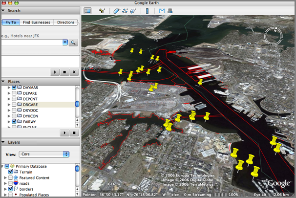
12.26.2006 11:45
BitVector 1.3
There is a new release of the python BitVector library by Avi Kak.
Looks like lots of improvements! The size option to the constructor
will greatly simplify my code and the improved docstrings will make
development easier since I work with BitVectors sporadically. For
anyone working with bit level system and network problems, this
package is a real life saver. I really do not want to ever go back to
the C/C++ bit interface after using BitVector.
from BitVector import BitVector
bv = BitVector(intVal=65,size=16)
print bv
# 0000000001000001
bv = BitVector(intVal=65,size=32)
print bv
# 00000000000000000000000001000001
bv.permute?
Type: instancemethod
Base Class: <type 'instancemethod'>
String Form: <bound method BitVector.permute of <BitVector.BitVector object at 0x12e82d0>>
Namespace: Interactive
File: /Users/schwehr/projects/src/noaadata/ais/BitVector.py
Definition: bv.permute(self, permute_list)
Docstring:
Permute a bit vector according to the indices
shown in the second argument list. Return the
permuted bit vector as a new bit vector.
BitVector-1.3.html -- BitVector-1.3.tar.bz2
12.26.2006 10:42
Photoshop tutorials
Things to do while out sick... learn more of photoshop. Revision3
has a series called PixelPerfect by Bert
Monroy. He goes too fast, but it is easy enough to pause and replay
10 times until you understand what he did. Also, I think I am using a
different version of photoshop than he is, so somethings are in
different places. I really need to upgrade my laptop to CS2 from CS.
Here are my results from the first tutorial. Yes, it is dorky lightning bolts coming out of a basket ball.
Here are my results from the first tutorial. Yes, it is dorky lightning bolts coming out of a basket ball.
12.25.2006 06:25
OpenECDIS.org
http://openecdis.org/
The Open ECDIS Forum (OEF) is dedicated to the development of Electronic Chart Display and Information Systems (ECDIS). By means of its consensus building activities, OEF promotes the vision of a maritime Geographic Information System (GIS) that supports navigation, environmental control and vessel traffic services. Through its discussion forums, meetings, promotional activities, and publications the OEF shall inform producers of digital charts, manufacturers of marine electronics and R&D organisations on issues related to ECDIS. The OEF supports the International Hydrographic Organization (IHO) in its efforts to make its S-57 standard a world wide accepted exchange format for Electronic Navigational Charts (ENC).
The objectives of the Open ECDIS Forum are as follows: * Encourage and support the development of ECDIS and its extensions * Provide lines of communication between IMO/IHO/IEC standards users and developers * Promote the S-57 data model in the marine environment and monitor the usage of S-57 * Examine the development proposals and advice on their validity * Promote ENC production To achieve these goals the Open ECDIS Forum will: * Consider and register the user defined S-57 objects * Consider and register private producer agency codes * Levy nominal fees, if necessary, to avoid abuse of registration and to finance the activities of the OEF * Distribute forum related freeware/shareware software and sample S-57 datasets * Organsize workshops on related matters and distribute associated documentation * Provide a link with the IHO web-site and with other organisations relevant to ECDIS
12.25.2006 05:47
useit.com lack of usability
Merry Christmas all!
I just checked out useit.com, a website by Jakob Nielsen about computer usability. His website has a MAJOR usability flaw. In today's internet, I am not going to bookmark his site and keep checking on it for new articles. However, his front page has no RSS, ATOM, or other links marked as a news feed. He wants people to sign up for another freakin email list. No thank you! News feeds let me control if I get updates from a site. Every mailing list system has a different interface and it pollutes my email stream that I use for critical person-to-person communication.
Jakob has a report on news letters that contains the keyword RSS in it, but I am not paying more than $300 for some report he wrote to find out that he thinks RSS is a waste of energy.
It looks like the site has some interesting articles, but without RSS, I am just not going to pay attention to him unless his articles hit RSS feed by someone else - which is what happened this morning.
I just checked out useit.com, a website by Jakob Nielsen about computer usability. His website has a MAJOR usability flaw. In today's internet, I am not going to bookmark his site and keep checking on it for new articles. However, his front page has no RSS, ATOM, or other links marked as a news feed. He wants people to sign up for another freakin email list. No thank you! News feeds let me control if I get updates from a site. Every mailing list system has a different interface and it pollutes my email stream that I use for critical person-to-person communication.
Jakob has a report on news letters that contains the keyword RSS in it, but I am not paying more than $300 for some report he wrote to find out that he thinks RSS is a waste of energy.
It looks like the site has some interesting articles, but without RSS, I am just not going to pay attention to him unless his articles hit RSS feed by someone else - which is what happened this morning.
12.24.2006 08:58
Earthquakes in Google Earth by the USGS
http://earthquake.usgs.gov/research/data/google_earth.php
The USGS provides Google Earth kmz files for the last 7 days of quakes. There is a network link in there, so it looks like it does update. One feature request would be to have a sample seismograph recording for the quake from a nearby station.
The USGS provides Google Earth kmz files for the last 7 days of quakes. There is a network link in there, so it looks like it does update. One feature request would be to have a sample seismograph recording for the quake from a nearby station.
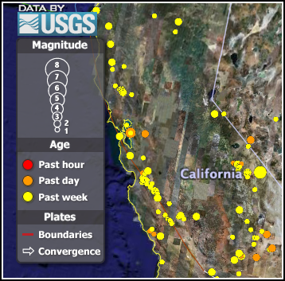
12.23.2006 16:08
isightcapture troubles
isightcapture is a really great command line utility, but today is the
2nd time that the my isight has stopped responding. The first last
time was to unplug/replug the camera.
isightcapture -t png foo.png FATAL: setting data channel failed - cam busy/not connected ?How to I reset the camera/firewire system without a reboot? I have other datalogging going on and definitely do not want to reboot the computer remotely.
12.23.2006 11:48
Will papers be competition for EndNote?
Will Papers [mekentosj.com]
be competition to EndNote? I hope so.
Papers bundles all the great technologies that come with MacOSX Tiger to give you a complete new workflow for reading scientific articles. You find, download, archive, and organize all your articles within a single application. But that is just the start, using spotlight you instantly find back the paper you are looking for. Read it fullscreen, add your notes, send a copy to a colleague...
12.20.2006 09:53
unittest++
I have been watching unittest++ for a while now. It was definitely
not ready for prime time a few months back, but it appears to be worth
another look when I get back to writing C++ code again (I have been
almost exclusively python for a couple months).
unittest++ made it to debian unstable:
http://packages.debian.org/unstable/source/unittest++
And a blog post about unittest++: UnitTest++: The New Choice for C++ Unit Testing? [alittlemadness.com]
unittest++ made it to debian unstable:
http://packages.debian.org/unstable/source/unittest++
And a blog post about unittest++: UnitTest++: The New Choice for C++ Unit Testing? [alittlemadness.com]
12.19.2006 10:08
python OptParse choice example
Here is a small example of using a choice command line option.
#!/usr/bin/env python
if __name__=='__main__':
from optparse import OptionParser
myparser = OptionParser(usage="%prog [options]")
typeChoices = ('binary','nmea','nmeapayload')
myparser.add_option('-t','--type'
,choices=typeChoices,type='choice'
,dest='ioType'
,default='nmea'
,help='What kind of string to expect ('
+', '.join(typeChoices)
+') [default: %default]')
(options,args) = myparser.parse_args()
I used a temporary variable (typeChoices) to allow the same list to
handle both the choices option and the help. Here is the help.
./foo.py -h usage: foo.py [options]And if all goes well:
options: -h, --help show this help message and exit -t IOTYPE, --type=IOTYPE What kind of string to expect (binary, nmea, nmeapayload) [default: nmea]
./foo.py -t binary # No outputAnd when you give it something that is not allowed:
./foo.py -t arsenic usage: foo.py [options]
foo.py: error: option -t: invalid choice: 'arsenic' (choose from 'binary', 'nmea', 'nmeapayload')
12.19.2006 09:45
pluggd - audio search
I haven't tried this yet, but it made it to wired.
http://www.pluggd.com/
http://www.pluggd.com/
Pluggd was founded in February 2006 with the goal of making it easier for people to discover, experience, and share online audio and video programming (often called 'podcasts.')
Our website is an aggregation of both traditional media and independent online-only producers. We've built great tools to help you find what you want, based on topics of interest, popularity, and critical acclaim. We're also proud of the revolutionary search tools we're building to make your online experience even better including HearHere, our newest feature that makes it easy for people to find exactly and precisely what they want within a 'podcast.' Look at the sample on our home page.
At Pluggd, you can:
Discover podcasts based on your interests and the interests of others. Experience and listen to them online, or download to your PC or mobile device. Share your opinions, thoughts, and insights on podcasts by rating them and passing them on to friends, family, and colleagues.
12.18.2006 13:47
OSSIM Planet
Finally got OSSIM installed which now comes with OSSIM Planet in the
dmg. I have not yet had a chance to explore any datasets, but it
looks promising.
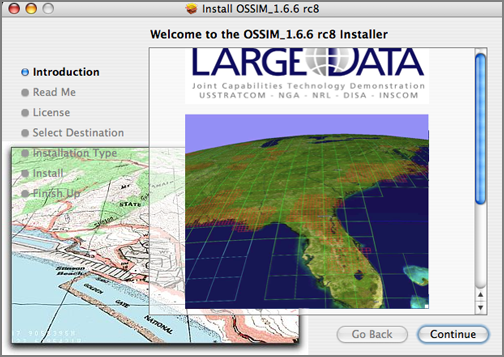
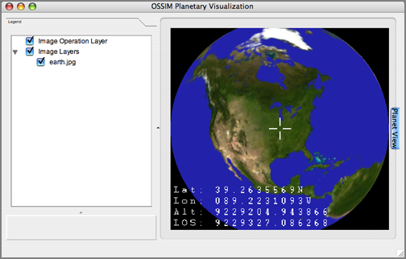
12.18.2006 13:04
GoogleNasa.com
This has been slashdotted, so right now all I can get is the google cache text.
Google NASA Partnership Announced[slashdot]
google cache googlenasa.gov
google cache googlenasa.gov
Wecome to the Google NASA collaboration site. This site is the central collaboration site for information regarding the partnership, and an extranet for people at Google and NASA. Google and NASA employees should register here to access collaborative workspaces, message boards, and contacts. Google and NASA employees may register to access additional information, including information about current collaborations, contacts, discussion boards, documents, and more. All Google and NASA employees are encouraged to register and contribute!
Google Employees must provide their Google e-mail address, and employee ID. NASA employees must provide a valid NASA E-mail address, and Unique Identifier.
rGoogle NASA News NASA Takes Google on Journey into Space - Wednesday, July 05, 2006 NASA Ames Research Center, located in the heart of California's Silicon Valley, and Mountain View-based Google Inc. today announced plans to collaborate on a number of technology-focused research-and-development activities that will couple some of Earth's most powerful technology resources.
12.17.2006 10:48
Early morning Dover, NH
Here are two early morning shots from the tower above Dover.
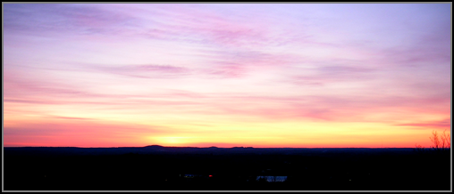
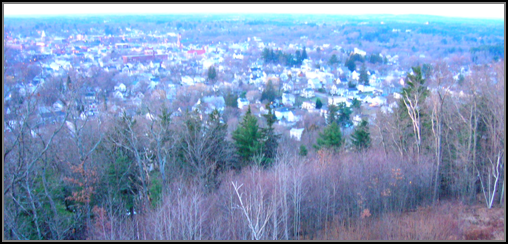
12.17.2006 10:09
MARs Tools for Interactive ANalysis
Besides pushing acronyms up to and over the edge, this sight is pretty
cool. This exactly why we need the Google Earth, Mars Edition. Being
able to load mapped and modeled data on the planets is a huge help for
scientists and the KML/Google way is a lot easier for types like me.
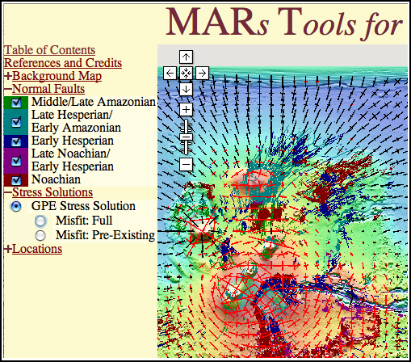
12.16.2006 13:58
AGU Virtual Globes - Big Data in Google Earth
From the AGU abstracts this year.
http://conferences.images.alaska.edu/agu2006/hagemark.htm
Presenting Big Data in Google Earth with KML . Bent Hagemark Google, 1600 Amphitheatre Pkwy, Mountain View, CA 94043, United States . KML 2.1 and Google Earth 4 provides support to enable streaming of very large datasets, with "smart" loading of data at multiple levels of resolution and incremental update to previously loaded data. This presentation demonstrates this technology for use with the Google Earth KML geometry and image primitives and shows some techniques and tools for creating this KML. . http://earth.google.com/ http://code.google.com/p/regionator/And another that is similiar to my survey work in Santa Barbara in early Nov. This is the USGS Walrus cruise database.
USGS Coastal and Marine Geology Survey Data in Google Earth . Carol Reiss, Clint Steele, Alex Ma, John Chin . US Geological Survey, 345 Middlefield Rd.MS 999, Menlo Park, CA 94025, United States . *Invited presentation* . The U.S. Geological Survey (USGS) Coastal and Marine Geology (CMG) program has a rich data catalog of geologic field activities and metadata called InfoBank, which has been a standard tool for researchers within and outside of the agency. Along with traditional web maps, the data are now accessible in Google Earth, which greatly expands the possible user audience. The Google Earth interface provides geographic orientation and panning/zooming capabilities to locate data relative to topography, bathymetry, and coastal areas. Viewing navigation with Google Earth's background imagery allows queries such as, why areas were not surveyed (answer presence of islands, shorelines, cliffs, etc.). Detailed box core subsample photos from selected sampling activities, published geotechnical data, and sample descriptions are now viewable on Google Earth, (for example, M-1-95-MB, P-2-95-MB, and P-1-97-MB box core samples). . One example of the use of Google Earth is CMG's surveys of San Francisco's Ocean Beach since 2004. The surveys are conducted with an all-terrain vehicle (ATV) and shallow-water personal watercraft (PWC) equipped with Global Positioning System (GPS), and elevation and echo sounder data collectors. 3D topographic models with centimeter accuracy have been produced from these surveys to monitor beach and nearshore processes, including sand transport, sedimentation patterns, and seasonal trends. Using Google Earth, multiple track line data (examples: OB-1-05-CA and OB-2-05-CA) can be overlaid on beach imagery. The images also help explain the shape of track lines as objects are encountered. . URL: http://walrus.wr.usgs.gov/infobank/programs/html/training/kml/kml.htmlThere were lots of other interesting abstracts and I am kicking myself for not having been there.
12.15.2006 10:20
Google Mars
This is an oldie but goodie. Google Mars in a Google Map
interface. Here is hoping that is also becomes a Google Earth like
system. I tried dropping a kmz on the map like with the Earth, but no luck.
This did not work: CCOM on Mars. Dear Google, Please allow this link to work! Thanks, -Kurt.
This did not work: CCOM on Mars. Dear Google, Please allow this link to work! Thanks, -Kurt.
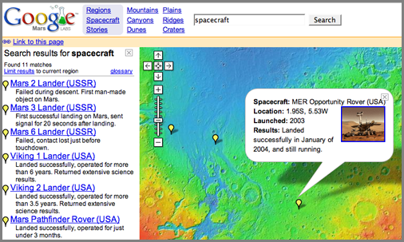
12.15.2006 09:08
Iridium and GPS satellites
Obviously in Google Earth 
Interesting Satellite Visualizations for Google Earth
Iridium low orbit comm sats:
GPS satellites in higher orbits:
Interesting Satellite Visualizations for Google Earth
Iridium low orbit comm sats:
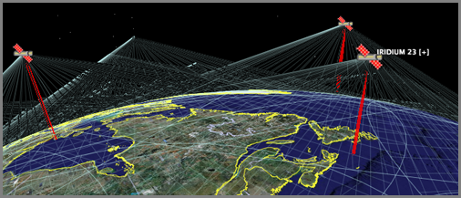
GPS satellites in higher orbits:
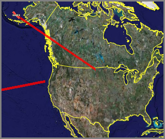
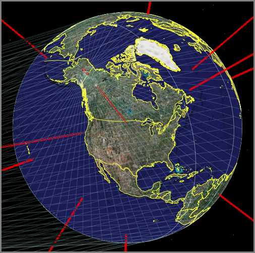
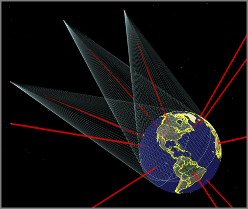
12.14.2006 10:57
NOAA PORTS gets a Google Map interface
This is a big improvement! Now it is really easy to figure out what
the station names and id numbers are that I care about.
NOAA Ports Southern Chesapeake Bay
NOAA Ports Southern Chesapeake Bay
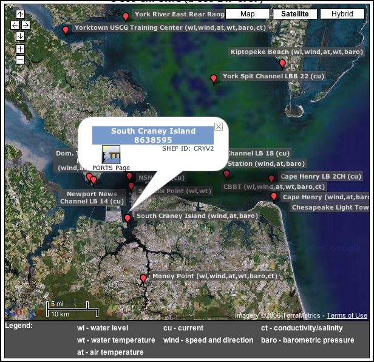
12.13.2006 16:39
Godiva2
More marine data in google earth/maps... Godiva2
From the list of AGU 2006 Virtual Earth section...
blower1.htm
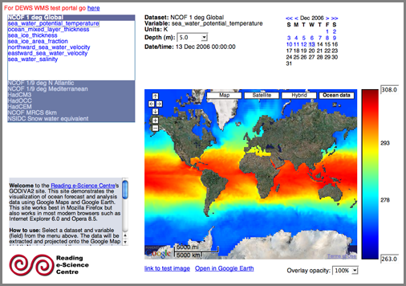
From the list of AGU 2006 Virtual Earth section...
blower1.htm
In this presentation we shall discuss our experiences with using Google Maps and Google Earth to explore and visualize oceanographic data. We focus on data from General Circulation Model analyses of ocean circulation for operational and research purposes. These datasets are produced by institutions such as the UK Met Office and the National Oceanography Centre and are very valuable, both for environmental science research and for applications such as search and rescue and oil spill mitigation. It is important for scientists to be able to explore and visualize these high-resolution, terabyte-scale datasets efficiently; it is also important from an educational point of view to allow novice users to be able to explore these datasets in order to understand the ocean circulation. Geobrowsers such as Google Earth are promising tools for achieving this but have important limitations. These include a lack of proper treatment of the depth and time dimensions: geobrowsers mainly focus on surface features that do not vary with time.
We present a system that works around these limitations by combining the geobrowser with an interactive website: this is known as the ``Godiva2'' system. The website allows the user to select the dataset and variable of interest (e.g.\ sea water temperature as predicted by the Met Office), then select the water depth and time. The website includes an instant preview of the data in a dynamic map component (a Google Map). Having selected the required parameters, the user clicks on a link to display the data in Google Earth. The user can zoom into the virtual globe and data will be displayed at an appropriate resolution, allowing users to see features of ocean circulation at all scales. Displayed images are all generated dynamically from source data, giving a high degree of flexibility (e.g.\ user-defined colour scales). We shall discuss the design of the system and the lessons learned, concluding with a discussion of work in progress and future work, including our work towards basing the system upon international, open standards such as the Open Geospatial Consortium's Web Map Service.
12.13.2006 12:25
Triton - Sim City meets 3D oceans
triton
is a little app for laying out under water cable networks with the cost
changing as you alter the layout, sensors, and nodes.
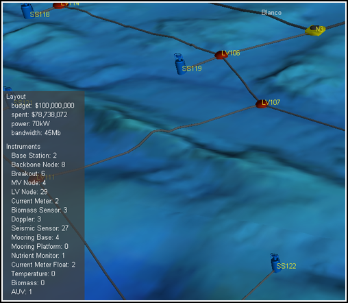
12.13.2006 08:25
isightcapture
This is a command line app that I have been dying for...
isightcapture
BTW... don't have a photoshop command line alias? Here is my current code for it from my .bashrc. I have only CS on my laptop, but CS2 is on my desktop. This way, I have one bashrc that handles both cases.
isightcapture
isightcapture -t png image.png photoshop image.png
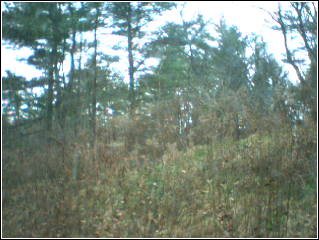
BTW... don't have a photoshop command line alias? Here is my current code for it from my .bashrc. I have only CS on my laptop, but CS2 is on my desktop. This way, I have one bashrc that handles both cases.
if [ -d /Applications/Adobe\ Illustrator\ CS2/Adobe\ Illustrator.app ]; then alias photoshop='open -a /Applications/Adobe\ Photoshop\ CS2/Adobe\ Photoshop\ CS2.app' alias illustrator='open -a /Applications/Adobe\ Illustrator\ CS2/Adobe\ Illustrator.app' else alias photoshop='open -a /Applications/Adobe\ Photoshop\ CS/Adobe\ Photoshop\ CS.app' alias illustrator='open -a /Applications/Adobe\ Illustrator\ CS/Illustrator\ CS.app' fiNOTE: I need to wash my office window and give the camera a black hood so that the reflections are decreased. And no, I am not leaving my isight outside in the weather!
12.12.2006 13:27
XMLSpear
Another XML editor... it's free and better than some others I have
seen. I don't have a schema right now for my current project, so I
have not tried the validation functionality.
XMLSpear
XMLSpear
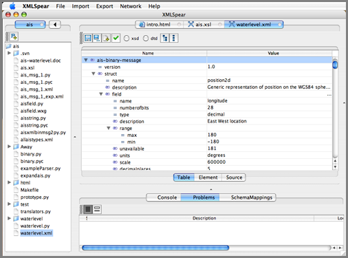
12.12.2006 08:01
Ship Motion Control - software for specific marine applications
Another Briana and Matt link. Ship Motion Control sells sensors and
software for specific marine activities. Shown here is their
application for the fishing industry.
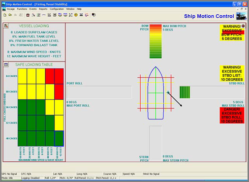
12.12.2006 07:56
Rutgers marine science classroom
Just found this site from some notes by Matt and Briana. Looks like
some good content: http://www.coolclassroom.org/
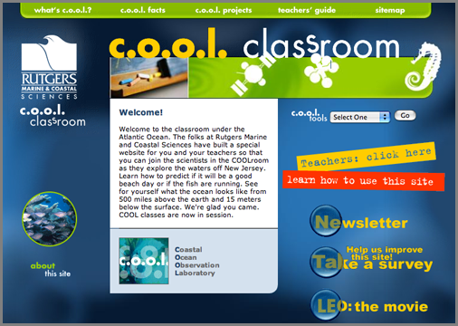
12.12.2006 06:17
case of the letters in the python hex function
I reported a bug in the python BitVector class a couple weeks ago and
now that classes are finish, Avi has gotten back to me with the cause
and patch. Thanks Avi!
Please replace line (A37) by
hexVal = hex( intVal ).lower().rstrip('l') #(A37)
The bug occurs when I try to make BitVectors of very large integers
(greater than int(2**31-1) ... 2147483647). BitVector would throw an
exception.
BitVector(intVal=3000000000) ================================================== exceptions.KeyError Traceback (most recent call last)The problem stems from the hex function as Avi found. The case of A..F is different between integers less than 2**31. Lower below and upper above in python 2.4:
/sw/lib/python2.4/site-packages/BitVector.py in __init__(self, *args, **kwargs) 602 bitlist = [] #(A41) 603 for item in hexVal[:]: #(A42) ==> 604 bitlist += _hexdict[item][:] #(A43) 605 bitlist = map( lambda x: int(x), bitlist ) #(A44) 606 i = 0 #(A45)
ipython2.4 In [1]: print hex(300000000) 0x11e1a300 In [2]: print hex(3000000000) 0xB2D05E00LWhen I try python 2.5, I see different behavior (which I think is more correct):
ipython2.5 In [1]: print hex(300000000) 0x11e1a300 In [2]: print hex(3000000000) 0xb2d05e00L
12.11.2006 16:04
x11 apps crashing on mac - ssh solution
Mac OS
10.4 or later: Remotely-based X11 applications quit unexpectedly or
behave erratically [apple.com]
"ssh -Y" seems to do the trick. Was using "ssh -X" before. Someone had mentioned this to me before and it never really sunk in until now. Now I can happily ssh -Y myserver and run emacs without troubles.
"ssh -Y" seems to do the trick. Was using "ssh -X" before. Someone had mentioned this to me before and it never really sunk in until now. Now I can happily ssh -Y myserver and run emacs without troubles.
12.11.2006 15:39
USCG PDA usage
PDA's for Small Boat Station [uscg.mil]
"The PDAs have streamlined the paperwork process involved in law enforcement boardings," said Petty Officer 1st Class Rob Goley, operations petty officer for Station Los Angeles. "Now, all the paperwork and Coast Guard law enforcement references are stored on the PDA. This enables boarding teams to be able to conduct an inspection, issue a printed copy (of form 4100) to the mariner, and download all the information to the (Marine Information for Safety and Law Enforcement) MISLE database though a very efficient process," said Petty Officer 2nd Class Brian McKenrick, a boarding team leader from Station Los Angeles.
The PDA has replaced the large amount of redundant paperwork and work hours that used to be required to transfer the information from a law reenforcement boarding to the Coast Guard's database, said Petty Officer 2nd Class Paul Buccat, boarding team member from.
The PDA is the latest technological component added to the MISLE-JPAD project, according to the Operational Support Center's website. MISLE has efficiently merged the Marine Safety Network, Vessel Identification and Documentation database, and the Maritime Safety and Law Enforcement information database, said Petty Officer 2nd Class Brian Kelly, a reservist boarding team member of Station Los Angeles. It is proposed that one day the MISLE database will be connected to the PDAs via a real-time network that will enable field units to access all pertinent USCG databases. "This would give units mobile-technology capabilities similar to the computers already in police cars," said Kelly.
In the six months since receiving the PDAs, the boarding teams here have continually stated how much they enjoy the advantages and "user-friendly" nature of this new technology, said Senior Chief Petty Officer Mark Preston, officer in charge of Station Los Angeles.
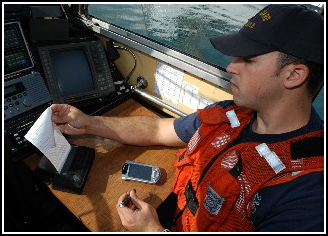
12.11.2006 15:25
USCG MISLE database
Just found this on the web from 2004...
USCG MISLE Web-Based GIS Application Presented by: Joseph Elliot Buckles
Abstract: The Coast Guard has a need to use GIS technologies to serve as a dynamic visualization tool to display the location of search and rescue cases, oil spills, aids to navigation information, demographics data, readiness data, etc. to better aid CG decision makers and improve information services to the public. The Marine Information for Safety and Law Enforcement (MISLE) GIS application is an attempt at satisfying this need. MISLE GIS is a full featured web deployed application. It features a Clustered SDE Database on the back, ArcIMS and Web Service middle tier, and a thin rich client on the front end. This client is an ActiveX Control that runs inside Internet Explorer and emulates a desk top GIS application. This application displays base maps and charts, Coast Guard specific information on Facilities and waterways, as well as dynamic data relating to CG Cases and Activities. . Functionally: The purpose of the MISLE GIS application is to serve as a reference map for various areas of interest for the US Coast Guard. Primarily the application is accessed on land after the incidents have been entered through the non-spatial MISLE application via PDA or desktop reporting. . The spatial side of the application runs deeper than what can bee seen on the surface. On the backend lies a SQL Server database with ArcSDE 8.2 handling the spatial translation. ArcSDE primarily handles all of the spatial searching and retrieval of data requested the by the ArcIMS client which is running a separate web server. ArcIMS by itself is a favorable client for serving spatial data to the web. However, it does have limitations. The MISLE users require a simple interface combined with advanced search and drawing capabilities. A number of processes to complete many of the capabilities had to be developed specifically for this application. For example adding a layer dynamically to the web based client and choosing which field to use as a label. . Design: The design of MISLE GIS is co-dependent on many variables. ArcIMS as discussed above requires significant custom development to meet the needs of MISLE users. Therefore various controls must be developed to utilize exiting ArcSDE schemas and the creation of new schemas must be interwoven without breaking integrity. . The most intriguing design is that of the Available layers table. This table is essentially a catalog table which references all layers, both ArcSDE and flat files. The available layers table links to the sde.sde_layers table found in the SDE database. This is referenced by the client to give the user an organized list of layers to add to their map service. This layer catalog functionality gives the user control over color of the displayed features and how the layers are labeled. For ease of recreation these customizations can be saved to their server stored profiles. . The client takes a considerable amount of credit for being the most time consuming for development. However concurrently as the data is being displayed data sources also must be found, loaded, and maintained. The thin client does not have direct access to the database. In fact by use of the display name the actual table names of the ArcSDE layers are masked. But there is intent to open the database to read only access by various GIS savvy users in the USCG. . Therefore vector and rater layers stored in ArcSDE are cataloged logically by either Coast Guard wide or one of nine coast guard administration districts. This model would serve the logical purpose allowing each district or unit to store its data in separately. There are many more customizations that have been implemented. Please review "Creating Custom GIS Web Applications using ArcIMS, ArcSDE, and ActiveX" Lakey, Mike UC 2004; and also "Workaround for ActiveX connector Shortcomings" Kowalski, Brian UC 2004 for more information on customization in the MISLE GIS client. . Future: The Coast Guards Enterprise GIS database started with a specific project to support. However, projects evolve and new needs are identified. The GIS component of the MISLE application was the foundation for a new project in Port Security GIS support. This new initiative was brought about by a number of factors including the super bowl. The new requirements include raster data support and complete focused datasets for various ports. The Port GIS requires a substantial increase in disk storage requirements to meet the new goals. . The future of the Enterprise GIS will be an independent modular database allowing multiple projects such as MISLE and Port Security GIS which are thin ArcIMS clients to seamlessly access the database. As Coast Guard confidence with GIS grows it is foreseeable that many districts will begin accessing the database directly through ArcGIS.
Author Information: Joseph E. Buckles GIS Data Analyst/DBA Stanley Associates, Inc. US Coast Guard Operations System Center 408 Coast Guard Drive Kearnysville, WV. 25430-3002 Phone: (304) 264-2574 Email: jbuckles(at)osc.uscg.mil
12.11.2006 10:30
Computer virus delays cruise liner
I got this headline from Fairplay:
Infected Freedom delays cruise
ROYAL Caribbean (RCCL) Freedom of the Seas, the world's largest cruise ship, has delayed its next departure after repeated outbreaks of norovirus.
12.10.2006 12:24
Google Earth - NASA Goddard Scientific Visualization Studio
I think I am starting to sound like a broken record... however, this
reminds me that I need to look more into WMS.
http://svs.gsfc.nasa.gov/documents/available.html
NASA Goddard Publishes Huge Google Earth Time Animations [googleearthblog]
http://svs.gsfc.nasa.gov/documents/available.html
SVS Image Server Available Animations List
These image and animation layers are available through Web Map Services (WMS) on the SVS Image Server. Links are provided to explanatory pages and animations on the Scientific Visualization Studio web site.
Google Earth links are now available here New! Many of these animations are now available to be used in Google Earth. Just look for this link image in the list of animations below. To view these animations properly, the animation slider should be set to its minimal size and other layers such as terrain should be turned off. You may also need to increase the memory cache size and disk cache size within the Google Earth settings. Follow this link to get more information about Google Earth and KML files.
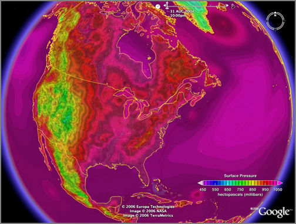
NASA Goddard Publishes Huge Google Earth Time Animations [googleearthblog]
12.10.2006 10:40
Google Earth's Geographic Web
I was doing some reading this morning and following along the
locations in the text with Google Earth. While doing that, I noticed
the "Geographic Web New!" and took a quick
look. Turns out it is pretty interesting. It has images from Panoramio and links to Wikipedia. I tried a couple places
(Portsmouth, NH and Seattle, WA) and found some interesting images,
but noticed that there was no image taken from right on the Seattle
Locks, so I decided to try to add one to see if it would appear. Not
surprisingly, it did not appear right in google earth (that would
allow people to post some not so fun images), but there is a way to
see a new picture along with others right away.
First I had to turn on the Geographic Web folder on the left hand side of the Google Interface.
Then I went and checked out the Wikipedia entry for Portsmouth, NH. "Big cities" in New Hampshire really are not that big...
The I checked out a Panoramio image out by New Castle/Kittery. I figured that I can do that. I 15000+ digital photos. There has to be one in there worth posting to try this out.
Here is the photo that I used for testing. Dave R. and I went out to the Locks when I visited Seattle earlier this year. Watched the fish swimming up the locks (there weren't many), the ships going through, and the million tourists. BTW, the best view of fish jumping at that time was on the upstream side of the locks. Confused fish?
Here is the Panoramio interface for adding images. After the image is uploaded, you can place a tack on a Google Map display and drag it around until it matches the location. Pretty cool use of Google Maps. Note the really tiny gray "X" when I moved the tack.
This thing really did not like me taking a screen shot of it, but I finally tricked it into letting me see it. The image did not show up in the layers area.
However, if I loaded up a panoramio.kml (which is just a network link), then I found my image along with a lot more from other Panoramio uploads from other users.
Finally, Panoramio offers an RSS feed so you can watch what specific users upload. I'm sure flickr has RSS feeds too. Not that I am planning to upload a million pics, but here is my feed just for grins. There is only one pic for me so far and it is likely to stay that way for a while.
http://www.panoramio.com/userfeed/14690.rss
Lots could be improved, but this is pretty nice and by being directly attached to google, it is more likely to succeed that the previous items that I have blogged about (http://www.placeopedia.com/).
First I had to turn on the Geographic Web folder on the left hand side of the Google Interface.
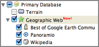
Then I went and checked out the Wikipedia entry for Portsmouth, NH. "Big cities" in New Hampshire really are not that big...
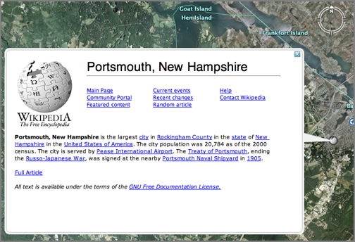
The I checked out a Panoramio image out by New Castle/Kittery. I figured that I can do that. I 15000+ digital photos. There has to be one in there worth posting to try this out.
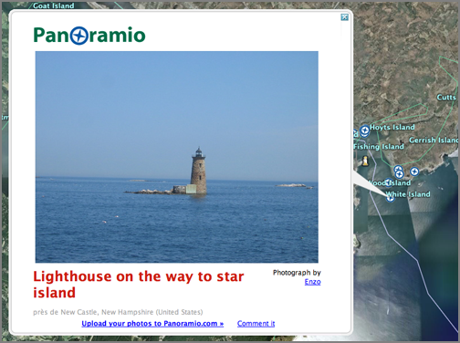
Here is the photo that I used for testing. Dave R. and I went out to the Locks when I visited Seattle earlier this year. Watched the fish swimming up the locks (there weren't many), the ships going through, and the million tourists. BTW, the best view of fish jumping at that time was on the upstream side of the locks. Confused fish?
Here is the Panoramio interface for adding images. After the image is uploaded, you can place a tack on a Google Map display and drag it around until it matches the location. Pretty cool use of Google Maps. Note the really tiny gray "X" when I moved the tack.
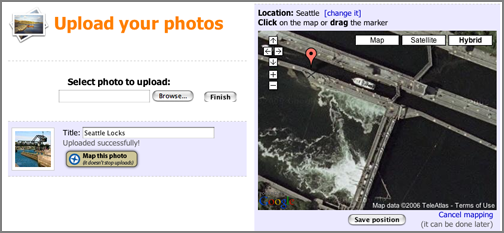
This thing really did not like me taking a screen shot of it, but I finally tricked it into letting me see it. The image did not show up in the layers area.
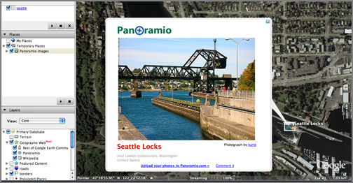
However, if I loaded up a panoramio.kml (which is just a network link), then I found my image along with a lot more from other Panoramio uploads from other users.
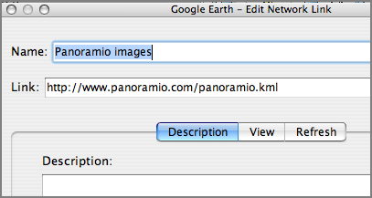
Finally, Panoramio offers an RSS feed so you can watch what specific users upload. I'm sure flickr has RSS feeds too. Not that I am planning to upload a million pics, but here is my feed just for grins. There is only one pic for me so far and it is likely to stay that way for a while.
http://www.panoramio.com/userfeed/14690.rss
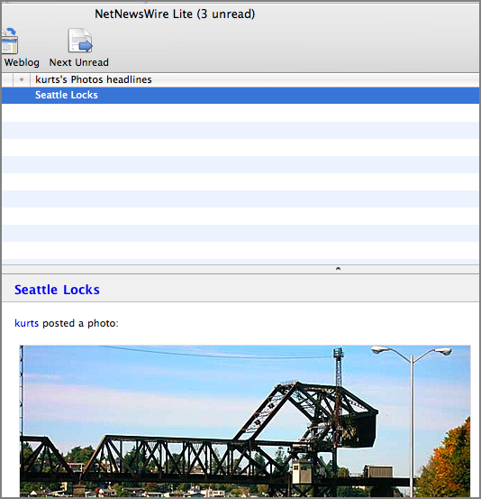
Lots could be improved, but this is pretty nice and by being directly attached to google, it is more likely to succeed that the previous items that I have blogged about (http://www.placeopedia.com/).
12.09.2006 18:14
NOAA Great Lakes Google Earth data
The NOAA GLERL now has Google Earth kml files for the Great Lakes.
http://www.glerl.noaa.gov/res/glcfs/
http://www.glerl.noaa.gov/res/glcfs/
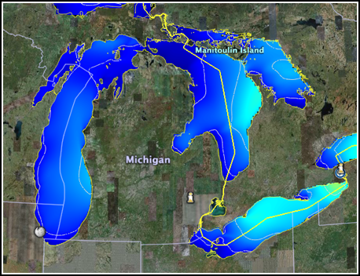
12.09.2006 17:55
Mac OSX swap file
From Dale via Val...
Ever wonder where the swap file is on OS X? /var/vm -DaleTaking a closer look see:
ls -l /var/vm total 1048576 drwx--x--x 16 root wheel 544 Dec 1 22:48 app_profile -rw------T 1 root wheel 67108864 Dec 2 12:25 swapfile0 -rw------T 1 root wheel 67108864 Dec 2 20:19 swapfile1 -rw------T 1 root wheel 134217728 Dec 2 20:24 swapfile2 -rw------T 1 root wheel 268435456 Dec 2 21:14 swapfile3And this is amusing (but not surprising)...
sudo file swapfile1 swapfile1: sticky ASCII text, with very long linesI have never seen this come up before:
file 107_names 107_names: unicos (cray) executableNever got a chance to check out the old cray machines even though I worked in the building next door to a couple back in the 90's.
12.09.2006 17:51
USCG suspends patrol boat operations in Florida
Bummer... Coast Guard Suspends Converted Patrol Boat Operations [piersystem.com]
WASHINGTON - The U.S. Coast Guard announced today its decision to suspend normal operations of eight converted 123-foot patrol boats assigned to Coast Guard Sector Key West, Fla., due to additional structural damage recently discovered in the hulls.
"I suspended the operation of all eight 123-foot cutters to ensure the continued safety of our crews as we assess additional structural damage recently discovered aboard this class of cutter," said Adm. Thad Allen, commandant of the Coast Guard. "The reliable, safe operation of our cutters and aircraft is paramount to our effective mission execution, including vital search and rescue and migrant interdiction missions in the area. We are making necessary adjustments to deploy aircraft and ships from other areas to maintain our robust coverage in the area while we develop a long-term solution."
The Coast Guard suspended operations today following a comprehensive analysis of the 123-foot patrol boat's structure, including metallurgical examination, full-scale testing using an instrumented cutter, laboratory analysis, computer-based structural analysis, and a third party review from the designers of the original hull form.
Following the discovery of significant buckling in the structural members underneath a main engine aboard one of the eight cutters, Rear Adm. Dale Gabel, the Coast Guard's chief engineer, personally inspected five more of the 123-foot patrol boats in Key West November 16. He found similar deformations, as well as other signs of hull weaknesses, aboard all five cutters.
The Coast Guard's Integrated Deepwater System had originally planned to convert 49 of the service's 110-foot cutters into 123-foot cutters, intending to increase the vessel's annual operational hours to 2,500 versus the 110-foot boat standard, which ranges from 1,800 to 2,200 hours. In June 2005, the Coast Guard stopped its conversion process at eight hulls when it determined the converted cutters lacked adequate capabilities to meet their expanded post 9/11 operational requirements.
Following conversion, the 123-foot boats displayed deck cracking and hull deformation and developed shaft alignment problems related to other structural issues.
The Coast Guard maintains a fleet of approximately 250 cutters and nearly 200 aircraft around the country. A total of 52 cutters and 39 aircraft are assigned to the Coast Guard's Seventh District.
The Coast Guard is exploring options to address operational gaps due to this decision, including temporarily assigning assets from other operational areas to Sector Key West and employing the crews of the 123-foot cutters to augment other vessels.
12.08.2006 16:25
Maine air photos corver parts of NH
I discoved that when the online maine air photo app complains and does not render an image, then just reduce the size of the browser window. Took me quite a while to realize what the problem was.
http://megisims.state.me.us/website/orthomap/viewer.htm
Now, how do I down load what I see?
http://megisims.state.me.us/website/orthomap/viewer.htm
Now, how do I down load what I see?
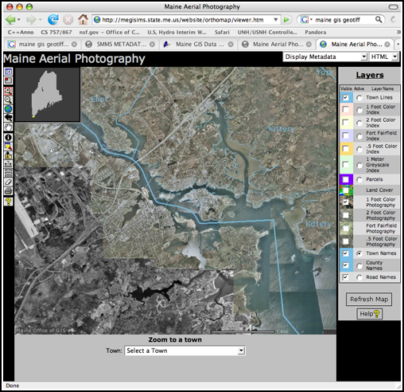
12.08.2006 15:25
GeoMapApp
I got the GeoMapApp Java jar to
download to my mac and Jim G. gave me a quick tour. Talk about an
easy way to quickly find single channel seismic data. If it were only
this easy for all my data needs!
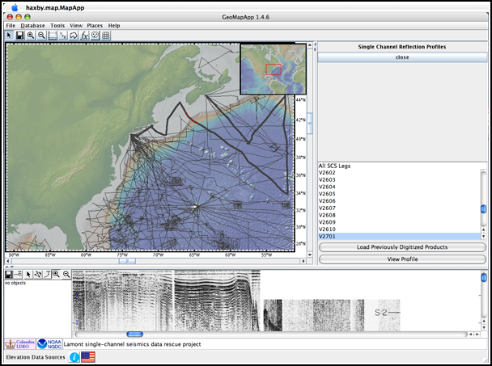
12.08.2006 14:51
Open-Source Spying
Open-Source Spying [New York Times - login required]
Intelligence heads wanted to try to find some new answers to this problem. So the C.I.A. set up a competition, later taken over by the D.N.I., called the Galileo Awards: any employee at any intelligence agency could submit an essay describing a new idea to improve information sharing, and the best ones would win a prize. The first essay selected was by Calvin Andrus, chief technology officer of the Center for Mission Innovation at the C.I.A. In his essay, "The Wiki and the Blog: Toward a Complex Adaptive Intelligence Community," Andrus posed a deceptively simple question: How did the Internet become so useful in helping people find information?
12.08.2006 10:57
GeoMapApp Google Earth files
Right now, it seems that the geomapapp.org Java download of
GeoMapApp is broken. I was going to explore a bit, but no app = no
explore. So I looked around the site a bit and found that they have
some Google Earth products available. A lot better colormap than the
Google Earth default bathymetry. Would be nice if they had cropped at
the coastline and made the images transparent for the land, but it is
still really cool.
GMA4GE.kml
There is also petrology data georeferenced. This is cool. A little more work on the html layout in the placemarks and some background information on what that petrology implies (for those of us who don't do petrology every day) would make this a great resource.
Endeavor_Petrology.kml

And then there are the sea floor pictures. I recognize this photo from Dill's 1964 these, as I used it in my La Jolla Fledermaus demo: La Jolla
LDEO_Seafloor_photos.kmz
And a page that would have been great for my thesis (had the database contained cores in my thesis area ... it doesn't)
ldeo_sediment_cores.kmz
This all goes back to the Arc CD that Larry Mayer and his class made for the Eel River STRATAFORM area about 6 years ago.
GMA4GE.kml
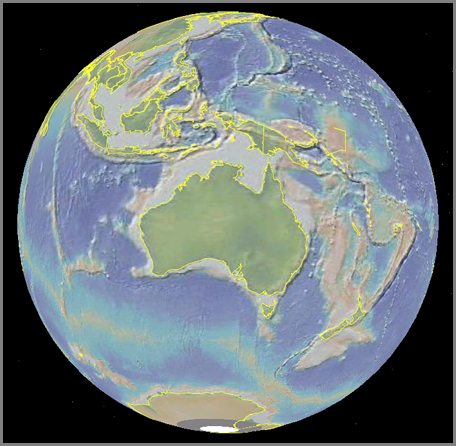
There is also petrology data georeferenced. This is cool. A little more work on the html layout in the placemarks and some background information on what that petrology implies (for those of us who don't do petrology every day) would make this a great resource.
Endeavor_Petrology.kml
And then there are the sea floor pictures. I recognize this photo from Dill's 1964 these, as I used it in my La Jolla Fledermaus demo: La Jolla
LDEO_Seafloor_photos.kmz
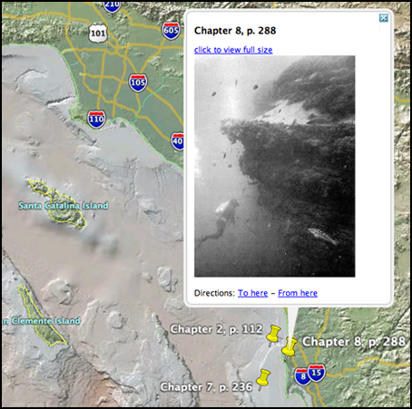
And a page that would have been great for my thesis (had the database contained cores in my thesis area ... it doesn't)
ldeo_sediment_cores.kmz
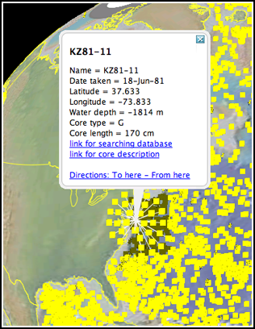
This all goes back to the Arc CD that Larry Mayer and his class made for the Eel River STRATAFORM area about 6 years ago.
12.08.2006 10:16
Multiple versions of Fledermaus
This is in the category of things that are obvious once you think
about them. For many Mac applications, you install them by dropping
the application (which is actually a directory bundling all sorts of
resources and such) into /Applications. This these applications, I
often rename the old version first so that if something is broken, I
can go back to the previous one until the new version is fixed. I ran
into a Fledermaus install bug with 6.3.0o where a library file got
dropped by the installer. Fledermaus also has a /Library/Application
Support/IVS directory that has cmdop and a few other things in it. I
had assumed that the Fledermaus application had to match the version
of the Application Support area. I was wrong. I copied the IVS
applications (version 6.3.0i) from my laptop into a separate folder in
/Applications on my desktop and I am back in business. Now I can get
back to exploring many of the cool new features in Fledermaus 6.3.0*.
UPDATE 11-Dec-2006: 6.3.0o was rereleased today. I gave it a go and it works for me. Thanks to the IVS guys for a quick turnaround.
UPDATE 11-Dec-2006: 6.3.0o was rereleased today. I gave it a go and it works for me. Thanks to the IVS guys for a quick turnaround.
12.07.2006 11:59
imap with Mail.app still a BIG problem
I still have not heard about a resolution about this CRITICAL bug with Apple's Mail.app:
Problem ID: 4615880 Mail loses mail when moving messages from inbox to imap folder 06-Jul-2006 02:45 PM Classification: Serious Bug State: DuplicateJust submitted another bug for the everpresent X11 app crashes from Linux boxes. Problem ID: 4870037. Now I need to submit one for no SSL support in iCal (even though I know that they know... they need to know that I know that they know)
12.07.2006 11:24
density - volumetric visualization is back
I have a new version of density out. Not much has changed, but it now
compiles on Mac OSX 10.4 ppc. No idea about any other platform
density.info
Put the info file in /sw/fink/10.4/local/main/finkinfo/graphics/density.info and then run "fink install density". Just a warning, it uses SIM Voleon, Coin, and SoQt, so it can take quite a while to build.

density.info
Put the info file in /sw/fink/10.4/local/main/finkinfo/graphics/density.info and then run "fink install density". Just a warning, it uses SIM Voleon, Coin, and SoQt, so it can take quite a while to build.
12.06.2006 19:03
USB LCD displays
Roland and I were talking about these to attach to a Buffalo. No,
not the animal, the NAS device. Roland went and found some...
USB LCD Modules (for under $100)
USB LCD Modules (for under $100)
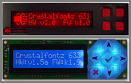
12.06.2006 14:15
The changing surface of Mars
After some discussion, I think that this could be water, but I lean
towards just a small, non-water related slope failure. With the
underlying material being lighter, it doesn't take much material
moving downslope to create this kind of pattern.
NASA pia09027.
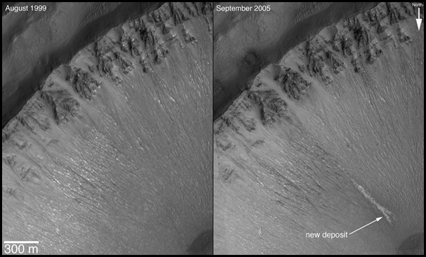
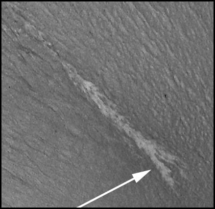
NASA pia09027.
12.06.2006 08:05
NASA Briefing today - End of life for the Mars Global Surveyor
Dec. 4, 2006 MEDIA ADVISORY: M06-186 . NASA Schedules Briefing to Announce Significant Find on Mars . WASHINGTON - NASA hosts a news briefing at 1 p.m. EST, Wednesday, Dec. 6, to present new science results from the Mars Global Surveyor. The briefing will take place in the NASA Headquarters auditorium located at 300 E Street, S.W. in Washington and carried live on NASA Television and www.nasa.gov. . The agency last week announced the spacecraft's mission may be at its end. Mars Global Surveyor has served the longest and been the most productive of any spacecraft ever sent to the red planet. Data gathered from the mission will continue to be analyzed by scientists. . Panelists include: - Michael Meyer -- Lead Scientist, Mars Exploration Program, NASA Headquarters, Washington - Michael Malin -- President and Chief Scientist, Malin Space Science Systems, San Diego, Calif. - Kenneth Edgett -- Scientist, Malin Space Science Systems - Philip Christensen -- Professor, Arizona State University, Tempe,Ariz.
12.06.2006 06:59
Another New Hampshire sunrise
It's the season again for great colors in the sky.
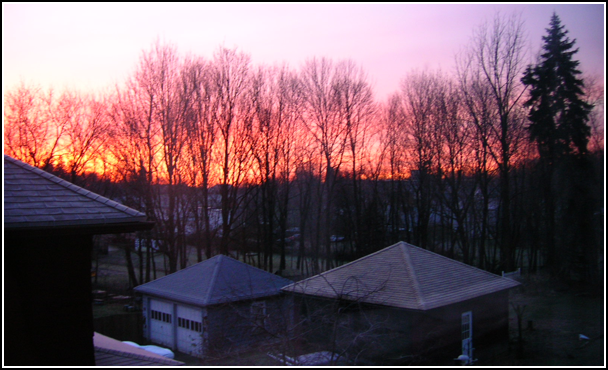
12.05.2006 16:21
Better view of an s57
This has most of the fields turned off. Things look much more sane.
12.05.2006 15:14
gdal ogr2ogr from s57 to kml
I just tried gdal's beta feature for writing out kmls. This works
only for vector data (which was not what I was aiming for). My first
attempt was to see what would happen if I blindly converted an S57
electronic navigation chart (ENC) to a Google Earth KML file. As you
will see below, the results are not pretty. This is not a big deal
nor unexpected. Displaying charts is not a simple task.
First, the KML support only comes in the gdal 1.4.0beta versions, so don't expect to find the formats in gdal 1.3.2 or older. Here is the build command that I used for gdal-1.4.0beta1:
When they all stack up, Google Earth grays out a bunch and expands a neighborhood of thumbtacks to click. Here I picked an OBJL of 27, which is a caution area.
Each thumbtack is a catagory of object class (OBJL). For example, 75 is a light.
And 17 is a Bouy.
Clearly, a lot of work needs to be done to get the s57 to look nice in KML format, but this shows that a good bit of the work has been done and this view makes it easier to understand what things are in s57 files.
First, the KML support only comes in the gdal 1.4.0beta versions, so don't expect to find the formats in gdal 1.3.2 or older. Here is the build command that I used for gdal-1.4.0beta1:
prefix=~/gdal
CPPFLAGS="-Os -I/sw/include" ./configure --prefix=$prefix \
--mandir='${prefix}/share/man' --with-local=/sw --with-libz=/sw \
--with-grass=no --with-cfitsio=/sw --with-pcraster=no \
--with-netcdf=/sw --with-png=/sw --with-libtiff=/sw \
--with-geotiff=internal --with-jpeg=/sw --with-gif=/sw --with-ogdi=/sw \
--with-fme=no --without-hdf4 --with-hdf5=/sw --with-jasper=no \
--with-ecw=no --with-kakadu=no --with-mrsid=no --with-bsb --with-ogr \
--with-pg=/sw/bin/pg_config --with-mysql=no --with-xerces \
--with-xerces-inc=/sw/include --with-xerces-lib='-L/sw/lib -lxerces-c \
-lpthread' --with-odbc=/sw --with-oci=no --with-dods-root=no \
--with-sqlite=/sw --with-geos=/sw/bin/geos-config \
--with-static-proj4=/sw --without-perl --without-php --without-ruby \
--without-python
Now to give it a try and see what formats are available:
# ~/gdal/bin/gdalinfo --version
GDAL 1.4.0.0beta1, released 2006/12/04
# ~/gdal/bin/ogr2ogr -h
Usage: ogr2ogr [--help-general] [-skipfailures] [-append] [-update]
[-select field_list] [-where restricted_where]
[-sql ]
[-spat xmin ymin xmax ymax] [-preserve_fid] [-fid FID]
[-a_srs srs_def] [-t_srs srs_def] [-s_srs srs_def]
[-f format_name] [-overwrite] [[-dsco NAME=VALUE] ...]
dst_datasource_name src_datasource_name
[-lco NAME=VALUE] [-nln name] [-nlt type] [layer [layer ...]]
-f format_name: output file format name, possible values are:
-f "ESRI Shapefile"
-f "MapInfo File"
-f "TIGER"
-f "S57"
-f "DGN"
-f "Memory"
-f "CSV"
-f "GML"
-f "KML"
-f "Interlis 1"
-f "Interlis 2"
-f "SQLite"
-f "ODBC"
-f "PostgreSQL"
...
I down loaded the US5VA17M S57 vector ENC from NOAA (Norfolk Harbor
and Elizabeth River) and opened the s57 to find this:
ls -l -rw-r--r-- 1 schwehr schwehr 3279 Dec 5 14:58 US5VA17E.TXT -rw-r--r-- 1 schwehr schwehr 4225184 Dec 5 14:58 US5VA17M.000 -rw-r--r-- 1 schwehr schwehr 20689 Dec 5 14:58 US5VA17M.001 -rw-r--r-- 1 schwehr schwehr 2637 Dec 5 14:58 US5VA17M.002 -rw-r--r-- 1 schwehr schwehr 5243 Dec 5 14:58 US5VA17M.003 -rw-r--r-- 1 schwehr schwehr 423 Dec 5 14:58 USEAX17E.TXT -rw-r--r-- 1 schwehr schwehr 255 Dec 5 14:58 USEBX17E.TXT -rw-r--r-- 1 schwehr schwehr 213 Dec 5 14:58 USEDX17E.TXT -rw-r--r-- 1 schwehr schwehr 222 Dec 5 14:58 USEEX17E.TXT -rw-r--r-- 1 schwehr schwehr 552 Dec 5 14:58 USEFX17E.TXTNow it is time to see what happens with the default conversion to kml!
~/gdal/bin/ogr2ogr -f KML 0.kml US5VA17M.000 open 0.kml
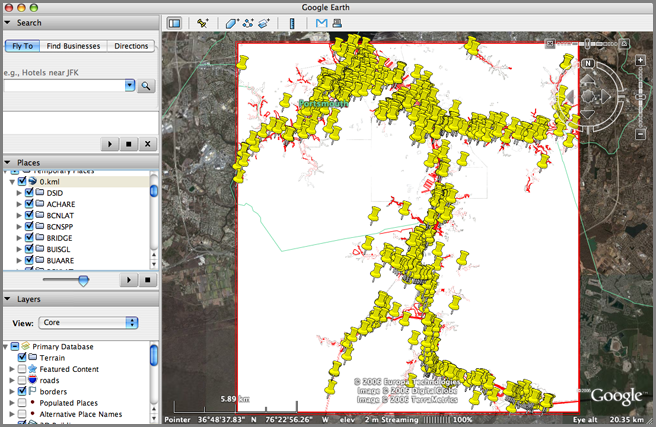
When they all stack up, Google Earth grays out a bunch and expands a neighborhood of thumbtacks to click. Here I picked an OBJL of 27, which is a caution area.
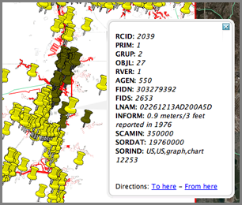
Each thumbtack is a catagory of object class (OBJL). For example, 75 is a light.
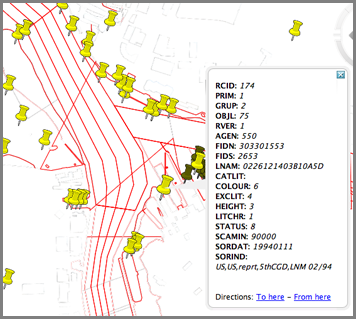
And 17 is a Bouy.
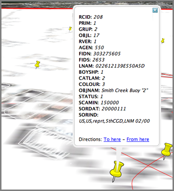
Clearly, a lot of work needs to be done to get the s57 to look nice in KML format, but this shows that a good bit of the work has been done and this view makes it easier to understand what things are in s57 files.
12.05.2006 11:01
gmt-full
I have updated my gmt-full package so that it works again. Put gmt-full.info
in /sw/fink/10.4/local/main/finkinfo/sci This will eat up about 70 MB,
but you get the full and high coastline datasets in GMT with fink.
12.05.2006 10:45
gmtplus down for the count
I am throwing in the towel on gmtplus... I tried building it against
GMT 4.1.4 and since I am getting an error and no one has been willing
to test what I do, this is my "gmtplus end of life notice". I think
it compiles against gmt 4.1.1, but that is it.
cc -g -Wimplicit -pedantic -W -Wimplicit-int -Wimplicit-function-declaration -Wnested-externs -I/sw/include -I/sw/include -c -o gmtpluslist.o gmtpluslist.c gmtpluslist.c: In function 'main': gmtpluslist.c:389: error: 'GMT_quick' undeclared (first use in this function) gmtpluslist.c:389: error: (Each undeclared identifier is reported only once gmtpluslist.c:389: error: for each function it appears in.)http://vislab-ccom.unh.edu/~schwehr/software/gmtplus/
and
cc -g -Wimplicit -pedantic -W -Wimplicit-int -Wimplicit-function-declaration -Wnested-externs -I/sw/include -c -o gmtplustrack.o gmtplustrack.c gmtplustrack.c: In function 'main': gmtplustrack.c:400: error: incompatible type for argument 2 of 'GMT_timestamp' gmtplustrack.c:400: error: too few arguments to function 'GMT_timestamp' gmtplustrack.c:668: error: 'struct GMT_DEFAULTS' has no member named 'last_page'
12.05.2006 08:10
Two interesting mac programs
Two interesting mac programs:
I don't have a personal gps, so using Google Earth to geocode images is a nice idea. Geotagger takes the current position from Google Earth when you drop a jpeg on the icon and adds the gps coords to the image meta info. Then use iPhotoToGoogleEarth (by the same guy) to make a kmz of photos. WARNING: For me, it seems to hang after producing the kmz. I have to Force Quit iPhoto after each use. I have emailed a bug report to the author.
SmallCreek.kmz
Panoply is a NASA Goddard netcdf world dataset viewing program written in Java. Have not tried this one yet.
I don't have a personal gps, so using Google Earth to geocode images is a nice idea. Geotagger takes the current position from Google Earth when you drop a jpeg on the icon and adds the gps coords to the image meta info. Then use iPhotoToGoogleEarth (by the same guy) to make a kmz of photos. WARNING: For me, it seems to hang after producing the kmz. I have to Force Quit iPhoto after each use. I have emailed a bug report to the author.

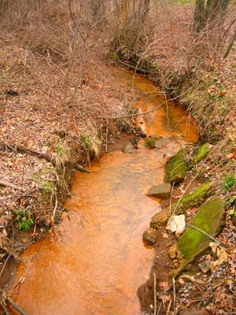
SmallCreek.kmz
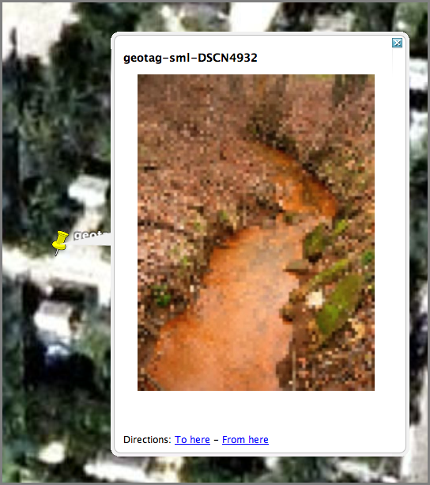
Panoply is a NASA Goddard netcdf world dataset viewing program written in Java. Have not tried this one yet.
12.04.2006 17:38
draft gmt 4.1.4 / fink 5.1.0
I gave it a go today for upgrading fink to gmt 4.1.4 and mbsystem
5.1.0. They "work for me," so try them at your own risk. If do try
them, let me know how it goes. These files go in
/sw/fink/10.4/local/main/finkinfo/sci
UPDATE: The Dec 04 patch has a bug that causes a buffer overflow. Remko caught and fixed it. Thanks!
fink-gmt-mbsystem-2006-12-05.tar.bz2
UPDATE: The Dec 04 patch has a bug that causes a buffer overflow. Remko caught and fixed it. Thanks!
fink-gmt-mbsystem-2006-12-05.tar.bz2
12.04.2006 11:35
bibtex mangling capitalization
BibTex likes to mangle somethings. For example, U.S. gets written as
U.s. unless you add '{}' around U.S. so that it looks like this:
{U.S.}. This makes my EndNote databases not useful for Word, but then
again, have never done that. Then end result in my bibtex looks like
this:
@article{
booth1993,
Author = {Booth, J.S. and O'leary, D.W. and Popenoe, P. and Danforth, W.W.},
Title = {{U.S.} Atlantic continental slope landslides: Their
distribution, general attributes, and implications},
Journal = {US Geological Survey Bulletin},
Volume = {2002},
Pages = {14-22},
Year = {1993} }
12.04.2006 09:54
The English Language
The English language always gives me grief. There are two links that will
hopefully help me out:
- Common Errors in English Usage by Paul Brians
- Elements of Style by Strunk and White - the website is horribly slow today
12.04.2006 09:01
First snow of the year
It snowed for about an hour this morning. Nothing stuck, but it is
still the first snow of the year here.
12.03.2006 19:39
Yahoo's new interfaces
I can't say that I like yahoo's new web interfaces. They are far
slower to load and don't work with many browsers or they work but not
completely. How fancy does the list of what is on TV have to be? And
why hide it behind a drop down arrow? I had to guess that the little
arrow is a menu. And the new yahoo maps are nice and all, but the new
interface for driving directions SUCK. How many times did it tell me
yesterday that an address could not be found and then a few minutes
later it finds the address. Where are all my saved addresses?
Slow yahoo:
Slow yahoo:
12.03.2006 14:09
opendns.com
I am trying out opendns.com for my
name lookups. I was excited that it might speed up name lookups over
my ISP, but in the process I discovered I still had DNS setup for when
I was R/V Revelle. That was causing lookups to be over second. When
I fixed my DNS entries, the times dropped to under .01s. But when I
configured opendns as my DNS, the times jump to about .02s. Either
way, it is better to have correctly configured DNS on a computer!
No idea yet if openDNS is worth it.
No idea yet if openDNS is worth it.
12.01.2006 16:37
slogcxx - simple c++ logger
There are no changes to the slogcxx code lately, but I have updated
the freshmeat entry to reflect its new home and it now has a bit of a
homepage.
12.01.2006 12:18
Lidar to Fledermaus to GoogleEarth polygon of a road
Just managed to get my first 3D object into Google Earth. I have some
NOAA Lidar (laser altimetry from an aircraft) that I need to extract
the local surroundings and import them into GE so that I can give a
view of the local environment. Google does not have buildings for the
area. Roughly here is what I did.
First I loaded the xyz data into PFMDirect and made a pfm object. I then imported the PFM into Fledermaus. I selected the whole area and flagged points as invalid that are not the road (this was the tricky part for me). I will try to document this process more as I get more comfortable with it. Then I tried to export the soundings, but this seems to hang Fledermaus. Instead I loaded the pfm in AvgGrid and built a surface there. Then in Fledermaus, I loaded the surface and selected the outline of one half of the road. I created a polygon and set if from the selection. Saved that out as xyz and then ran a little python script to export a filled polygon kml.
Some images from the process:
road.kml
First I loaded the xyz data into PFMDirect and made a pfm object. I then imported the PFM into Fledermaus. I selected the whole area and flagged points as invalid that are not the road (this was the tricky part for me). I will try to document this process more as I get more comfortable with it. Then I tried to export the soundings, but this seems to hang Fledermaus. Instead I loaded the pfm in AvgGrid and built a surface there. Then in Fledermaus, I loaded the surface and selected the outline of one half of the road. I created a polygon and set if from the selection. Saved that out as xyz and then ran a little python script to export a filled polygon kml.
Some images from the process:
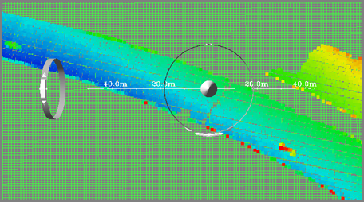
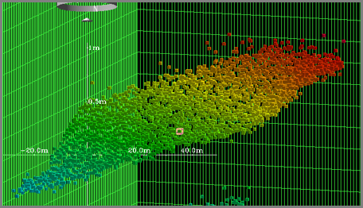
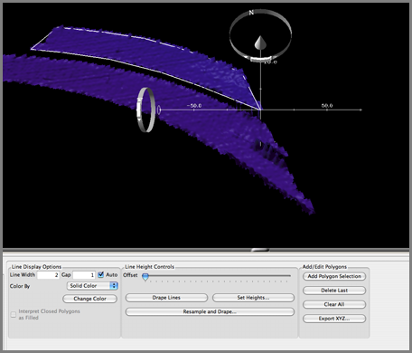
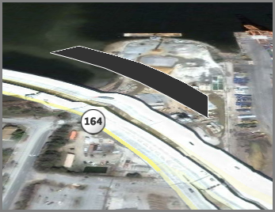
road.kml